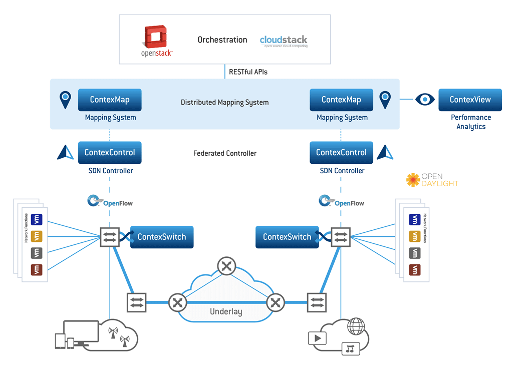

首页> 解决方案

解决方案概述
在现代大规模的移动核心网，运营商为了给用户提供一些高级服务，通常需要部署一些专业化的网络设备或者功能，比如入侵检测（IPS）、内容过滤、防火墙等，这些专用的网络设备一般会安装在核心网络的边缘，以固定的网络联接方式形成专用的数据路径。随着移动网络业务的蓬勃向上，智能手机和各种应用的广泛使用，移动网路数据业务的处理能力要求越来越高，智能管道的业务感知和分发能力也日渐提上日程。
新华三ContexNet是一个基于SDN技术的开放的分布式业务服务链解决方案，支持分布式部署，其能力来源于MappingService软件模块和Overlay网络隧道技术，MappingService软件模块利用分布式数据库和LISP协议在不同的数据中心间实时同步用户信息、用户策略、网络功能模块信息、网络连接信息和各个网元的实时状态，确认所有数据中心的控制器数据同步，并根据全网用户策略和转发策略生成一致的转发规则，控制用户数据流实现跨数据中心的业务服务链。
解决方案适用场景
- 企业级移动核心网络
解决方案亮点
- 基于开放平台和SDN技术的用户感知的业务服务链
- 高可扩展性，最大可扩展到500个网络域或者节点
- 全网策略控制和数据路径控制
客户收益
- 每个网络节点可最大支持8个控制器虚机、1000 OpenFlow交换机、10000个VNF接口、1千万用户IP
- 每个控制器可以支持3千万条OpenFlow流表，可处理3万条OpenFlow流表/s
- 每个软件交换机可以支持160Gb/s，2亿条OpenFlow流表，处理10万条OpenFlow流表/s
